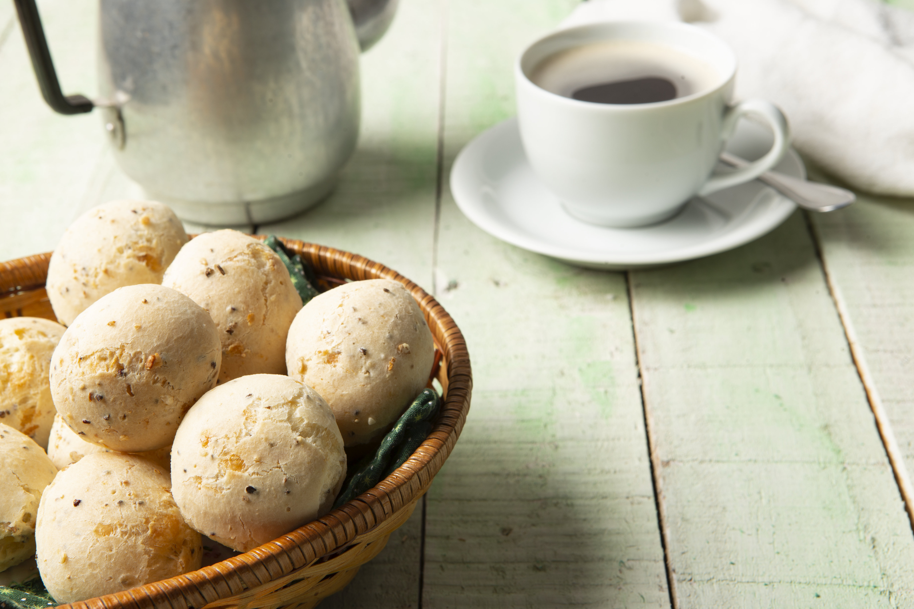
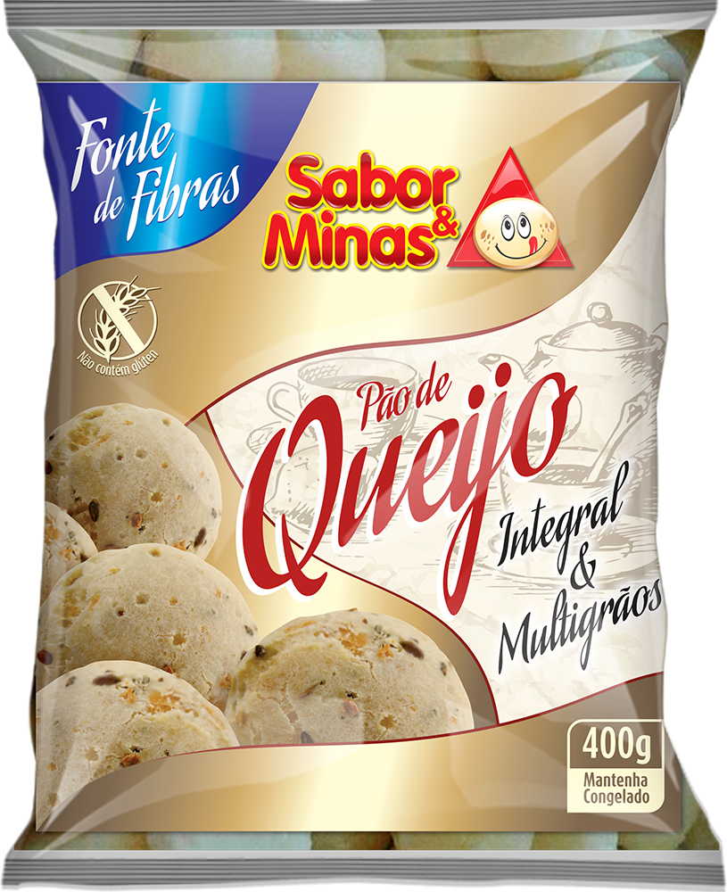
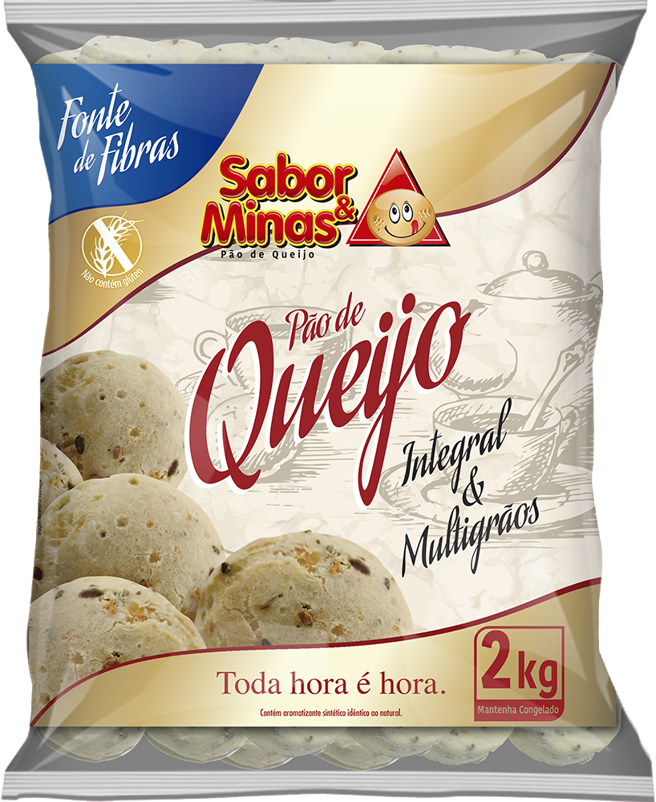

Pão de Queijo Multigrãos
Uma opção nutritiva e deliciosa.
Pão de queijo com mix de grãos, pensado para quem busca uma opção nutritiva sem abrir mão do sabor.
ONDE ENCONTRAR →Descrição
Pão de queijo com mix de grãos, pensado para quem busca uma opção nutritiva sem abrir mão do sabor.
Ingredientes
Fécula de mandioca, ovos pasteurizados, óleo de soja, mix de grãos (linhaça dourada, linhaça marrom, chia, semente de girassol, gergelim preto, quinoa vermelha e amaranto), polidextrose, amido modificado, polvilho azedo, gordura de palma, queijo minas padrão, soro de leite e aroma idêntico ao natural de queijo.
Não contém glúten.
Alérgicos: contém ovos, derivados de leite e soja.
Contém lactose.
Modo de preparo
- O produto vai direto para o forno sem descongelar.
- Preaquecer o forno por 10 minutos.
- Distribuir os produtos com espaçamento de 2 cm entre eles na assadeira.
- Assar à temperatura média de 180ºC por cerca de 30 minutos.
- Retirar do forno quando estiver dourado.
Dicas importantes
Não use forno de micro-ondas.
Não asse em forno frio.
Existem diferenças entre os fornos; por isso, ajuste o modo de preparo ao seu forno.
Conservação
• Freezer (-12ºC ou mais frio): 180 dias.
• Congelador doméstico (-4ºC a -6ºC): 60 dias.
• Transporte (-6ºC a -12ºC).
• Uma vez descongelado, o produto não deve ser novamente congelado.
Apresentações disponíveis


Tabela nutricional